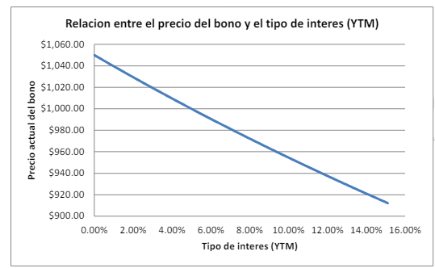

Las Tasas TIN (Tasa de Interés Nominal) y TAE (Tasa Anual Equivalente) son conceptos cruciales en el mundo financiero, especialmente relevante para consumidores y empresas al evaluar productos de crédito y ahorro. La TIN representa el porcentaje de interés que se aplica sobre el saldo pendiente de un préstamo o la rentabilidad de un producto de ahorro, sin tener en cuenta la frecuencia de capitalización de esos intereses dentro del año. Es decir, la TIN no refleja el efecto del interés compuesto.
Por otro lado, la TAE es una medida más completa que incluye no solo la tasa de interés nominal sino también la frecuencia con la que se capitalizan los intereses (mensual, trimestral, etc.). Esto significa que la TAE muestra un porcentaje anual que refleja el verdadero costo del préstamo o la rentabilidad real de un producto de ahorro, considerando el efecto del interés compuesto sobre los intereses generados previamente. Esto hace de la TAE una herramienta valiosa para comparar diferentes productos financieros en términos de su costo o rendimiento efectivo, ofreciendo una base clara para decisiones informadas en materia financiera.
En el contexto financiero, distinguir entre tipos de interés nominales y reales es vital para los inversores y prestatarios. El tipo nominal es la tasa de interés antes de cualquier ajuste por inflación. Indica cuánto interés se paga o se recibe en términos absolutos, pero no toma en cuenta el cambio en el poder adquisitivo del dinero.
El tipo real, en cambio, es ajustado por la tasa de inflación y refleja el verdadero incremento en poder adquisitivo que un inversor puede esperar de su inversión, o el verdadero costo de un préstamo para un prestatario. Esta tasa es crucial para decisiones financieras de largo plazo porque puede indicar si una inversión resultará en un aumento real de la riqueza. Por ejemplo, si una inversión ofrece un retorno nominal del 5% pero la inflación es del 3%, el retorno real sería del 2%, indicando un crecimiento real más modesto en el valor del dinero invertido.
Los tipos de interés son determinados por una variedad de factores macroeconómicos y microeconómicos. Estos incluyen las políticas del banco central, las expectativas de inflación, la situación económica global y nacional, y la demanda y oferta de fondos. Por ejemplo, un banco central puede incrementar los tipos de interés para controlar la inflación, lo cual encarecerá los préstamos y podría reducir el consumo y la inversión. Alternativamente, en tiempos de recesión, el banco central podría reducir los tipos de interés para hacer más barato el crédito y estimular el gasto en consumo e inversión. Estos movimientos en los tipos de interés tienen efectos directos y significativos en el coste del crédito, la rentabilidad de las inversiones y la actividad económica en general.
La relación inversa entre tipos de interés y precios de los bonos es fundamental en la gestión de carteras de inversión. Cuando los tipos de interés suben, los precios de los bonos caen; cuando los tipos bajan, los precios de los bonos suben. Esto se debe a que el rendimiento (yield) de un bono existente debe ajustarse al nivel de los nuevos bonos emitidos a la nueva tasa de interés más alta o más baja. Por lo tanto, un inversor que compre un bono en un entorno de tipos de interés crecientes enfrentará precios decrecientes en sus bonos existentes, lo cual afecta negativamente el valor de mercado.
La volatilidad en los precios de los bonos surge como respuesta a los cambios en los tipos de interés, siendo un factor crítico para los inversores al evaluar el riesgo asociado con diferentes valores de renta fija. Un bono cuyo precio es altamente sensible a los cambios en los tipos de interés tiene una alta volatilidad, lo cual puede representar tanto una oportunidad como un riesgo. La duración y la convexidad son dos medidas utilizadas para evaluar esta volatilidad. La duración mide la sensibilidad del precio del bono a los cambios en los tipos de interés, indicando cuánto podría cambiar el precio del bono en respuesta a un cambio de un punto porcentual en los tipos de interés. Por otro lado, la convexidad se refiere a cómo la duración de un bono cambia a medida que cambian los tipos de interés y proporciona una medida de cómo el precio del bono se ajusta en situaciones de cambios grandes en los tipos de interés. Juntas, estas medidas ayudan a los inversores a entender y gestionar mejor el riesgo de tasa de interés en sus carteras de bonos.
El precio de los bonos no solo está influenciado por los tipos de interés, sino también por una variedad de otros factores. Estos incluyen:
Un bono que vence en un año tiene nominal $1,000 y paga un cupón anual del 5%. La rentabilidad (tipo de interés) de inversiones a un año es del 6%. ¿Cuál debería ser el precio al que cotice el bono hoy? Si la rentabilidad de inversiones a un año cambia al 8%, ¿qué pasará con el precio del bono? ¿Y si cambia al 3%? ¿Y si cambia al 5%? Representa en un gráfico el comportamiento del precio del bono respecto del tipo de interés a un año.
Comenzamos a estudiar la relación entre los tipos de interés sin riesgo –que miden la rentabilidad de inversiones a distinto plazo- y los precios de los bonos. Si el bono paga un flujo de caja de $1,050 dentro de un año, el valor hoy de ese flujo de caja lo podemos hallar descontando al tipo de interés a un año, ya que el bono es, a todos los efectos, una inversión a un plazo de un año:
Precio = $1,050 / (1+6%) = $990.57.
Si la rentabilidad que hay que exigir al bono cambia al 8%, el precio del bono deberá bajar para ofrecer esa rentabilidad esperada:
Precio = $1,050 / (1+8%) = $972.22.
Y si la rentabilidad que hay que exigir cambia al 3%, el precio del bono deberá subir para que, al comprar el bono a ese precio mayor y recibiendo $1,050 en un año, la rentabilidad esperada sea exactamente 3%:
Precio = $1,050 / (1+3%) = $1,019.42.
Si cambia al 5%, el precio del bono será exactamente el valor nominal $1,000 (puede comprobarse con la fórmula).
En este caso, el tipo de interés actúa como el YTM (i.e., es la rentabilidad exigida al bono dado el precio de mercado o es el tipo de descuento que hace que el valor actual de los flujos prometidos por el bono sean iguales al precio de mercado).
